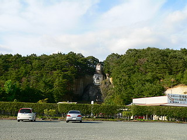
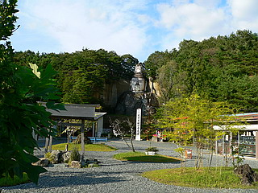
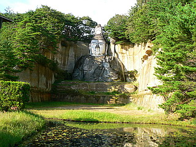
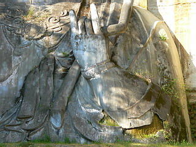
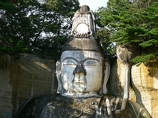
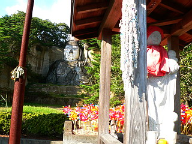
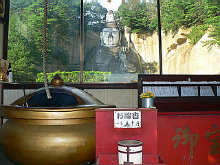
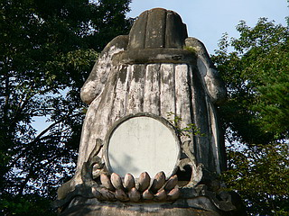
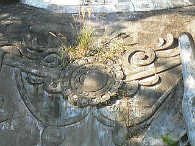

百尺観音/福島県相馬市
福島県の北部にある相馬市。
国道6号線から少し入ったところに百尺観音という巨大な磨崖仏がある。
周辺はごくごく普通の田舎の風情。
そんな風景の中、山を切り裂くようように巨大な観音様が現れるのだ。

マジンガーZ並みの唐突な登場にしばし呆然。
何となくエキゾチックな表情と浮世離れしたシチュエーションは東南アジアあたりの遺跡をも連想させる。
しかし「手焼せんべい新相馬 おみやげに民芸品相馬焼」という看板の文字が遠くアジアの果てに浮遊したココロを無理矢理福島に引き戻してくれました…
で、早速入場。
ええと入場料というか拝観料というか…あ、無料なんだ！太っ腹〜。
もっともあまりにも大きくて場外から見ても丸見えなので入場料もへったくれもないのだが。

で、肝心の観音サマ。
手前に池があり、これ以上近づけないようになっている。

従って観音サマを至近距離から見上げたりすることは出来ないのである。
もちろん足元をペチペチ叩いたり、よじ登ったりといった観音サマへの過激な愛情表現など望むべくもない。
それにしても崖をガッツリ彫り込んだその造形物のスケールの大きさに感心する。
百尺観音というネーミングなので30数メートル、という事なのだろう。
普通だったら崖に仏像を彫るのなら凹凸の少ないレリーフ状の磨崖仏あたりで手を打ちそうな気もするが、ここのはほぼ全身丸彫り。もはや磨崖仏とさえいえないレベル。背中さえ脱皮すれば立派な単独の仏像といってもよい位なのだ。
若干の規模の違いこそあれ中国の楽山大仏と同じような形式だ。
しかも左右の崖を見ると「何でそんなに奥まで削るの？」と言いたくなるほど不必要なまでに深く掘り込んである。まるでユンボ等の重機で手前を崩したかのようにも見えるが、そんな安直でお手軽な工法を想像するだけでバチが当りそうな位、この観音像建立には多くの苦労が伴っているのだ。
この観音像が彫られ始めたのは昭和6年。
荒義明なる人物が全国遊行の末、巨大仏建設を思い立ち制作を開始したのがそもそもの始まり。
世間の冷たい視線にもめげず彫り続ける事、三十数余年、昭和38年についに荒義明氏は力尽き制作途中であの世に旅立ってしまう。
…と、まあ、この辺まではよくあるハナシ、とまでは言わないまでも何となく想像の範囲内で収まるのだが、この後が尋常じゃあない。何と二代目の保彦氏が父の志を継いで大観音制作をはじめちゃうのだ！
…しかし初代義明氏の死からわずか15年後、二代目保彦氏も53才という若さで亡くなってしまう。
さあ、どうする？！百尺観音！
しかしそこは親父、爺ちゃんが作り続けた大観音、三代目が黙っているはずがないのである。というわけで目出度く三代目の嘉道氏が制作を開始…の筈だったが残念ながら資金不足のため現在、制作はストップしている。
ちなみに現在の高さは88尺（約27メートル）。完成した暁には118尺（約36メートル）になるという。
資金さえ揃えば明日にでも制作を始めてくれるのだろう、と信じたいが果たしてどうなることやら。
もしかしたらこのまま膝や蓮台部分がない状態がずーっと続くことも考えられる。百尺観音の運命や如何に…
観音像制作が開始された昭和6年というのは戦前の大仏ブーム真っ最中の時期である。
大正末から制作直前の昭和初期までの6年間を全国の古社寺秘仏古跡を訪ねた義明氏、その遊歴の軌跡は判らないが、当然あちこちでコンクリート製の大仏が造られている事は承知していた筈である。
個人的にはそのような昭和初期コンクリ大仏ブームに大いに刺激されたのではなかろうか、とにらんでいる。
何の確証もないんですけどね。
コンクリートで補修したようだが、今はそれすらも所々剥がれてしまっている。
 
手前には5日で作ったようなお地蔵さんが立っている。
70年以上経っても完成しない巨大仏とのコントラストが眩しい。

百尺観音の前には参拝スペースがあり、UFOのような香炉や賽銭箱が置かれていた。

この賽銭箱に入れる賽銭が観音制作再開へと役立つのだろう、と思うといつもより多めにお賽銭を入れちゃいました。
それにしても崖を削ってその中から観音像を抽出するという引き算による造形方法の不自由さを感じざるを得ない。例えば観音サマが左手に持っている蓮の花。あらかた姿が彫りあがってから「やっぱり花でも持たせるか」などと考えてもダメなんです。最初から完璧なプロットを作っておかなければならないのだ。
ま、途中で変更が利かないということは製作工程において迷いがないので求道者向きの工法ではあるんですけどね。
本当は初代義明氏は自分の代で完成すると目論んでいたのではなかろうか。
しかし実際には二代、三代目まで引き継がれても未だ完成しない状態となってしまった。
巨大石彫物の難しさを感じざるを得ない観音像である。
生涯一仏一体を合言葉に山を削り込み続けたアースワークともいえる石彫一代記に感動しまくり。
あ、三代記でしたね。
所々に草が生えている。
掃除もせずに放置したら速攻草木に覆われることは間違いなかろう。
 
頑張れ！親子三代に渡る悲願はあと少しだ！
いっそのこと十代目あたりまで頑張っていただいて、地下まで彫りこんで立像にしちゃう、というのはどうでしょうか？
え？無理？いやいや。皆さんのご協力次第ですぞ。
拝観料代わりに土産屋で素敵な焼物やせんべいをがんがんゲットしてくださいね。
当サイトをご覧の読者貴兄からもこの百尺観音のご報告をたくさん頂戴しており、本来であれば情報提供者の方々のお名前を記させていただきたいのだが、ご報告頂いた人数があまりにも多かったので大変恐縮ながら割愛させてもらいつつこの場をお借りして御礼申し上げる次第です。
2006.10.
珍寺大道場 HOME